Q .要怎麼進入"遊戲橘子"的介面？
A .開啟beanfun!，點選右上角 遊戲圖示即可進入 遊戲橘子 。
Q .若畫面一直停在loading畫面該怎麼辦？
A .請先嘗試重新開啟 beanfun! 及確認 beanfun! 已更新至最新版本。若問題仍無法排除，請來信或來電客服協助。
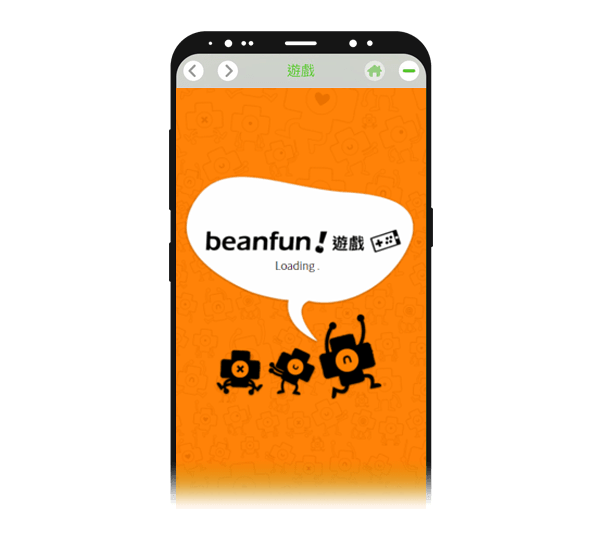Q .如何新增綁訂帳號?
A .STEP 1. 點選左上方側邊 選單按鈕
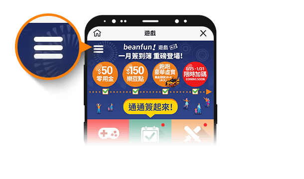STEP 2.點選點數帳號右方 下拉按鈕
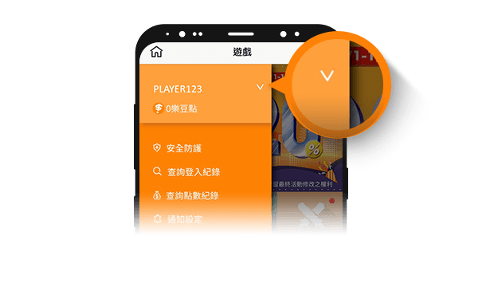STEP 3.點選 新增其他即可新增綁定帳號※ 最多能綁定3組帳號唷
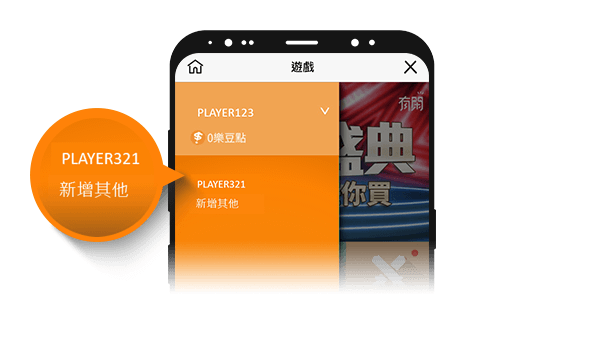Q .若顯示訊息"帳號已被其他裝置綁定，請至原裝置解綁＂該怎麼辦？
A .若更換新的裝置做綁定，請記得先解綁舊裝置。
當舊裝置已無法使用或更換手機號碼，請來信或來電客服請求協助。
Q .如何調整防護等級/解除綁定？
A .STEP 1.點選左上方側邊 選單按鈕
STEP 2.再點擊 安全防護
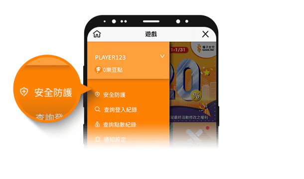STEP 3.即可看到 調整防護等級 和 解除綁定 的地方喔~
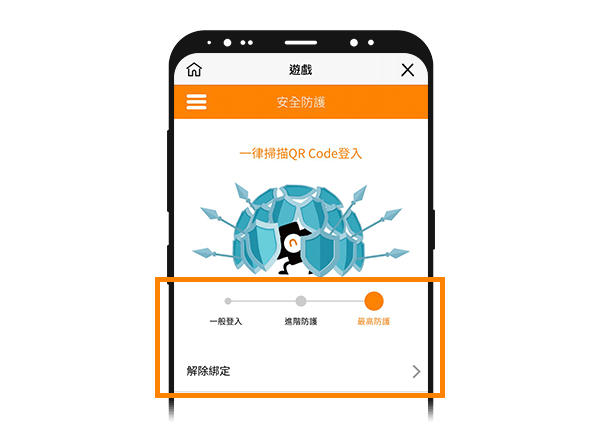Q .重新安裝的會員，要怎麼找回原本綁定的點數帳號？
A .使用跟原本一樣的手機號碼＆信箱驗證後，即可找回舊綁定資料。
Q .什麼是專屬祝福?
A .點選圖示的 專屬祝福
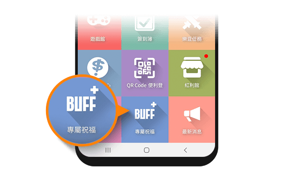即可開啟各遊戲的 BUFF功能
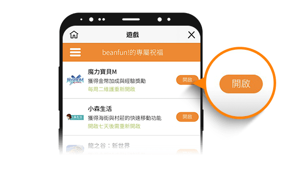Q .什麼是零用金？
A .請參考 零用金說明
Q .取得零用金後要到哪邊查看呢？
A .於beanfun! 點擊 背包
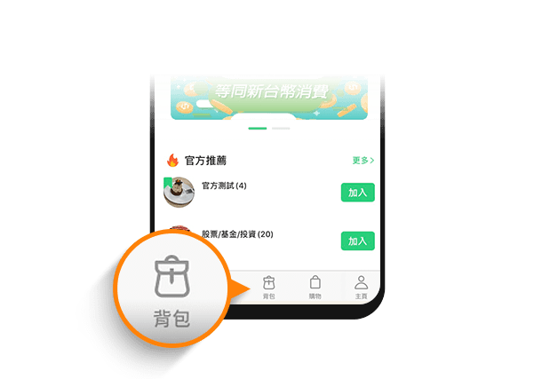即可於零用金欄位看到餘額，零用金可使用於相關通路上進行消費折抵。
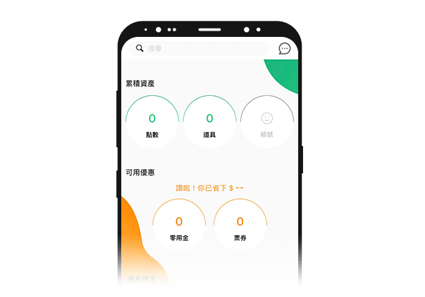Q .怎麼設定推播提醒？
A .點選左上方側邊 選單按鈕
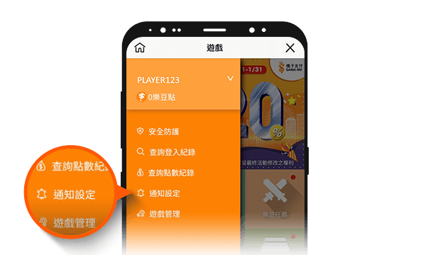Q .儲值中心在哪裡？
A .點選圖示的 儲值中心 即可進行點數儲值與購買
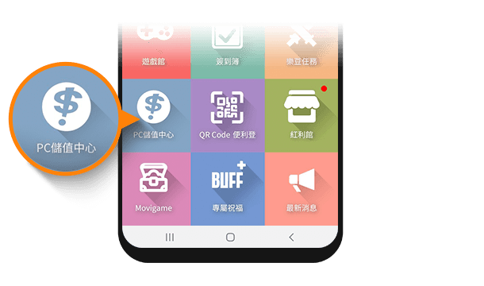Q .樂豆點紀錄查詢在哪裡？
A .STEP 1.點選左上方側邊 選單按鈕
STEP 2.在點選下方 查詢點數紀錄
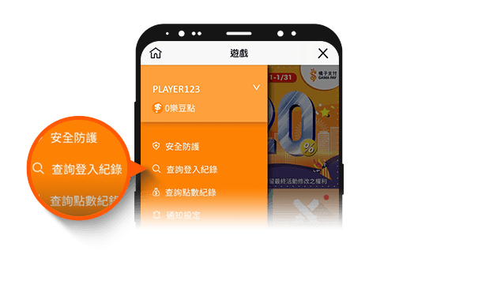Q .問題沒有在上面我要怎麼辦？
A .建議您可以來信至
客服信箱
或來電客服中心尋求協助喔～
客服電話：02-2192-6100-請按1